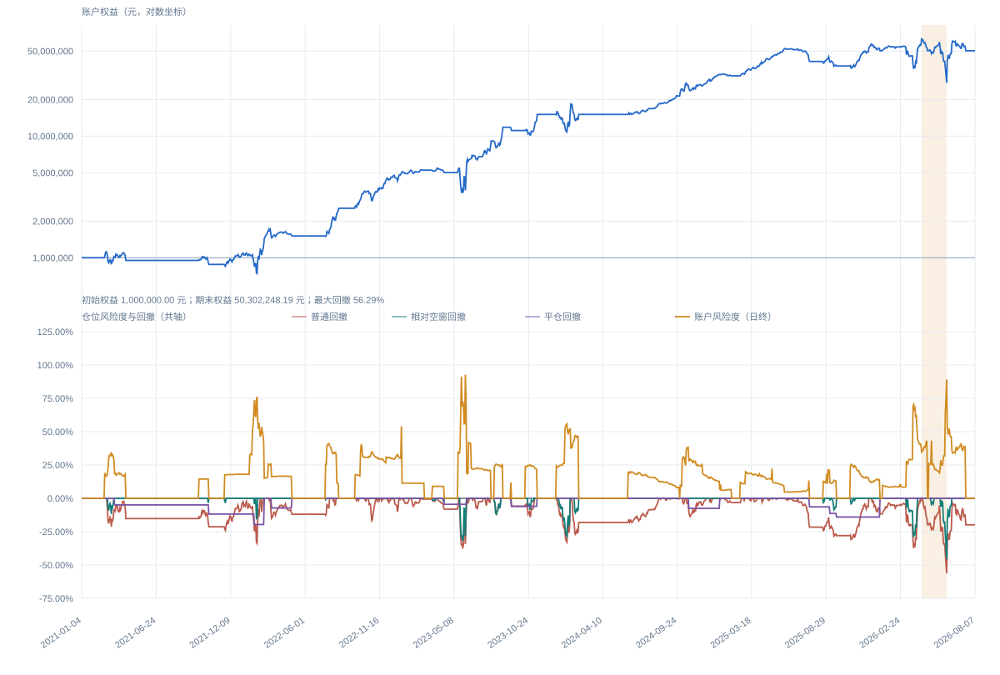

STRAT-026 · v0.6.2 · AUDITED RESEARCH BACKTEST
商品期货估值
与风险控制系统
从自然语言策略到可审计回测：覆盖34个非农商品品种，贯通交割估值、动态保证金、合约择优、事件执行和账户级风险约束。
01 · RESULTS
结果必须和风险一起看
上图为对数权益；下图把账户风险度、普通回撤、相对空窗回撤和平仓回撤放在同一百分比轴中。高收益伴随显著路径风险，最大普通回撤为56.29%。

分年度已实现盈亏 按平仓年度归属，单位：万元
2026年交易和持仓波动数据加载中。
02 · SYSTEM
把策略规则变成有序状态机
所有新开仓严格经过筛选层，再进入执行层；平仓拥有独立优先级。每次事件都保留来源日期、使用的保证金率、目标价和禁仓状态。
数据快照
行情、交割锚、动态保证金、合约周期、品级和资讯可得性。
筛选与择优
成熟度、交割标准、估值下沿、偏离阈值、资讯和时间条件。
组合风控
品种束冲突、方向风险、总风险和对冲优先级统一预算。
事件执行
限价续挂、一次加仓、分阶段退出、禁仓和临近交割强退。
会计与审计
逐笔成交、逐日盯市、保证金占用、权益回放和异常检查。
PUBLIC CODE EXCERPT
公开的是关键不变式，不是私人数据库
代码节选展示偏离识别、同品种择优、品种束风险门禁和组合风险计算。完整策略的全部参数组合、数据适配器和历史数据库不公开。
在网页中阅读公开代码节选 →def deviation_signal(close, anchor, margin_rate):
gap = close / anchor - 1.0
threshold = 2.0 * margin_rate
if gap >= threshold:
return "short"
if gap <= -threshold:
return "long"
return None
def gross_risk(long_margin, short_margin, equity):
return (long_margin + short_margin) / equity03 · AUDIT
回测结果能够逐层复算
最终报告不是单一脚本的输出。正式晋级前，规则、订单、成交、持仓、保证金、权益和退出原因分别接受验证。
包含真实短窗和完整历史运行。
覆盖筛选、手数、风险、成交与退出。
全部交易日逐日重放账户会计。
价格范围、数量、成本和保证金一致。
数据完整性正式快照哈希冻结
策略一致性32笔周期逐笔回放
账户会计期末权益与成交复算一致
输出完整性16项必需产物全部通过
04 · BOUNDARIES
限制条件与结果同时披露
这是一项研究工程成果。下面这些假设会影响收益解释，也是从回测走向实盘前必须继续验证的部分。
成本口径
手续费与滑点均为零，未做成交冲击和容量压力测试。
日频撮合
阈值在日线高低价范围内视为触达；无法还原真实盘中先后路径。
权益近似
同一开盘批次使用统一权益快照分配预算，不模拟订单级资金回流。
交割估值
部分月份采用经确认的研究型交割锚算法，不标作官方最终交割价。
数据质量
缺失候选字段时跳过，持仓关键字段缺失时终止，不制造OHLC成交价。
用途边界
历史回测不构成实盘业绩、收益承诺或投资建议。